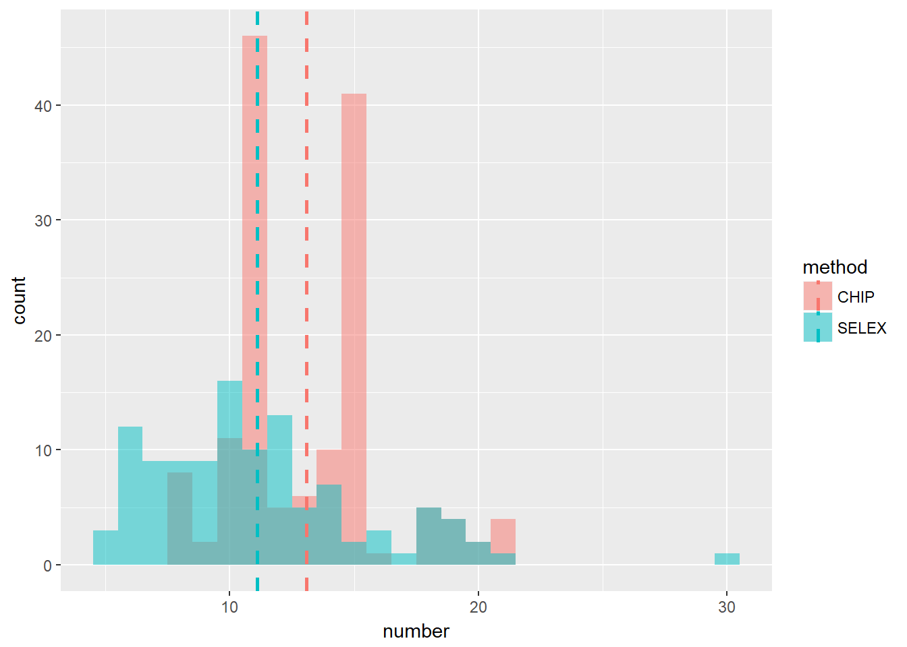

Last updated: 2017-07-18
Code version: 49915de
We did the explorative data analysis on the data from JASPAR2014 and HOCOMOCO. The analysis mainly includes PFM position counts, number of positions and the sample size.
Different methods of getting the PFM may result in different position counts, which are the column sums of the position frequency matrix(PFM). For some PFMs, the counts of each position are the same while this may not be true for the the other PFMs. For example:
mat=rbind(c(3,2,0,0,5),c(2,4,4,2,1),c(5,6,3,5,5),c(5,3,8,8,4))
rownames(mat)=c('A','C','G','T')
colnames(mat)=1:5
print('This PFM has the same counts in each position')[1] "This PFM has the same counts in each position"mat 1 2 3 4 5
A 3 2 0 0 5
C 2 4 4 2 1
G 5 6 3 5 5
T 5 3 8 8 4colSums(mat) 1 2 3 4 5
15 15 15 15 15 Here, we compare column sums of PFM from Chip-seq, HT-SELEX, Chip-on-Chip and from JASPAR 2014, HOCOMOCO.
#extract PFMs from JASPAR 2014
opts = list()
Jas_all=getMatrixSet(JASPAR2014,opts)
opts[['type']] = "ChiP-seq"
Jas_C1 = getMatrixSet(JASPAR2014,opts)
opts[['type']] = 'Chip-seq'
Jas_C2 = getMatrixSet(JASPAR2014,opts)
opts[['type']] = 'ChIP-seq'
Jas_C3 = getMatrixSet(JASPAR2014,opts)
opts[['type']] = 'ChIP-Seq'
Jas_C4 = getMatrixSet(JASPAR2014,opts)
Jas_Chipseq = c(Jas_C1,Jas_C2,Jas_C3,Jas_C4)
Jas_Chipseq_sum=lapply(Jas_Chipseq,colSums)Find the number of PFMs that have different column sums:
#A function to check if all the elements are equal in a vector. 1 if equal
checkequal=function(x){
return(ifelse(sum(x==x[1])==length(x),1,0))
}
paste(sum(unlist(lapply(Jas_Chipseq_sum,checkequal))),'/',length(Jas_Chipseq))[1] "133 / 145"There are 133 out of 145 PFMs have the same column sums.
Human:
chipname=read.csv('C:/Users/happy/OneDrive/Research/Logoplot dash/data/chipname.csv',header = T)
HO_Human_chipseq=HO_Human[unique(unlist(lapply(chipname$UniProt.ID,grep,x=names(HO_Human))))]
HO_Human_chipseq_sum=lapply(HO_Human_chipseq,colSums)
paste(sum(unlist(lapply(HO_Human_chipseq_sum,checkequal))),'/',length(HO_Human_chipseq))[1] "339 / 339"Each PFM has the same column sums.
Mouse:
HO_Mouse_chipseq=HO_Mouse[unique(unlist(lapply(chipname$UniProt.ID,grep,x=names(HO_Mouse))))]
HO_Mouse_chipseq_sum=lapply(HO_Mouse_chipseq,colSums)
paste(sum(unlist(lapply(HO_Mouse_chipseq_sum,checkequal))),'/',length(HO_Mouse_chipseq))[1] "89 / 89"Each PFM has the same column sums.
opts[["type"]] = "SELEX"
Jas_s1=getMatrixSet(JASPAR2014,opts)
opts[['type']] = 'High-throughput SELEX SAGE'
Jas_s2=getMatrixSet(JASPAR2014,opts)
Jas_selex = c(Jas_s1,Jas_s2)
Jas_selex_sum=lapply(Jas_selex,colSums)
paste(sum(unlist(lapply(Jas_selex_sum,checkequal))),'/',length(Jas_selex))[1] "100 / 112"There are 100 out of 112 PFMs have the same column sums.
Human:
HO_Human_selex=HO_Human[-unique(unlist(lapply(chipname$UniProt.ID,grep,x=names(HO_Human))))]
HO_Human_selex_sum=lapply(HO_Human_selex,colSums)
paste(sum(unlist(lapply(HO_Human_selex_sum,checkequal))),'/',length(HO_Human_selex))[1] "301 / 301"Each PFM has the same column sums.
Mouse:
HO_Mouse_selex=HO_Mouse[-unique(unlist(lapply(chipname$UniProt.ID,grep,x=names(HO_Mouse))))]
HO_Mouse_selex_sum=lapply(HO_Mouse_selex,colSums)
paste(sum(unlist(lapply(HO_Mouse_selex_sum,checkequal))),'/',length(HO_Mouse_selex))[1] "337 / 337"Each PFM has the same column sums.
opts[['type']] = "ChIP-on-chip"
Jas_co1=getMatrixSet(JASPAR2014,opts)
opts[['type']] = 'ChIP-chip'
Jas_co2=getMatrixSet(JASPAR2014,opts)
Jas_coc = c(Jas_co1,Jas_co2)
Jas_coc_sum = lapply(Jas_coc,colSums)
paste(sum(unlist(lapply(Jas_coc_sum,checkequal))),'/',length(Jas_coc))[1] "23 / 44"There are 23 out of 44 PFMs have the same column sums.
For JASPAR 2014, most of the PFMs from HT-SELEX and Chip-seq have the same counts on each position. About half of the PFMs from Chip-on-Chip have the same counts on each position.
For HOCOMOCO data, each PFM has the same column sums. Below are quotes from Kulakovskiy et al.(2016), in which discussed the data processing of HOCOMOCO.
According to Kulakovskiy et al.(2016), the Chip-seq data are from GTRD (Gene Transcription Regulation Database, http://gtrd.biouml.org, September 2013 release). For Chip-seq data,
“The analysis was done as follows: reads were aligned to reference genomes (hg19/mm9) using Bowtie(with parameters: –best –strata -a -m 10) and the ChIP-Seq peaks were identified using SISSRS(default parameters). All datasets were linked to UniProt IDs. The even ranked peaks were taken for motif discovery and the odd ranked peaks were used as an independent control data for benchmarking.”
For the HT-SELEX data processing,
“Raw reads from 542 HT-SELEX experiments were processed in the following way. Low-quality read segments were masked with poly-Ns ensuring at least a Q30 average Phred quality score in 10 bp sliding windows. Then, read counts were calculated for all reads for each pair of consequent (n, n + 1) SELEX cycles. Only reads with counts increased in (n + 1) cycle as compared to (n) cycle were kept and aggregated. The largest read count from any of the SELEX cycles was used as a sequence weight for each read. Motif discovery with ChIPMunk and diChIPMunk was performed in a weighted mode on reads from each HT-SELEX experiment, separately (HTSELEX-R models) and additionally for TFs with multiple experiments, by integrating data from all respective sets (HTSELEX-I models).”
This section compares the distributon of the number of positons in TF biding sites from SELEX and CHIP-seq. Data are from JASPAR2014.
ns = lapply(Jas_selex,function(x) dim(x)[2])
nc = lapply(Jas_Chipseq,function(x) dim(x)[2])
dat = data.frame(method = factor(rep(c("SELEX","CHIP"), c(length(Jas_selex),length(Jas_Chipseq)))),number = as.numeric(c(ns,nc)))
mdat = ddply(dat,"method",summarise,nummean=mean(number))
ggplot(dat,aes(x = number, fill = method)) +
geom_histogram(binwidth = 1, alpha = 0.5, position="identity") +
geom_vline(data=mdat,aes(xintercept = nummean,colour = method),linetype="dashed", size=1)
#ggplot(dat,aes(x = number,colour = method,fill = method)) +
# geom_density(alpha=0.2) +
# geom_vline(data = mdat,aes(xintercept = nummean,colour = #method),linetype="dashed", size=1)The mean number of positions from ChIP-seq is slightly larger than that from HT-SELEX.
Here, sample size refers to the total counts of each position of a PFM. For example, the sample sizes for the PFM below are 15.
1 2 3 4 5
A 3 2 0 0 5
C 2 4 4 2 1
G 5 6 3 5 5
T 5 3 8 8 4In JASPAR2014 and HOCOMOCO, there are some PFMs whose sample size is small, say less than 20. In such cases, the estimate of frequencies may not be reliable. For example, if the counts are (2,1,1,0), then (0.5,0.25,0.25,0) is not a good estimate.
Now we are going to find whether there are a large number of small sample size cases.
#a function to check whether the total counts at the fist position is <20.
checksize=function(x,n=20){
x=as.matrix(x)
return(sum(x[,1])<20)
}
#JASPAR
sum(unlist(lapply(Jas_all,checksize)))[1] 85#HOCOMOCO
sum(unlist(lapply(HO_Human,checksize)))+sum(unlist(lapply(HO_Mouse,checksize)))[1] 241There are 85 out of 593 PFMs from JASPAR2014 and 241 out of 1066 PFMs from HOCOMOCO have small sample size.
One way to account for the samll sample size and give a better estimate of frequencies is to use Dirichlet adaptive shrinkage, dash. When the sample size is small, we consider “shrinking” each frequency to 0.25, which is more reasonable.
Here is an example.
pfm=rbind(c(2,1,1,0),c(4,0,0,0),c(10,10,200,20))
dashm=dash(pfm,optmethod = 'mixEM')The dash estimate is
round(dashm$posmean,4) [,1] [,2] [,3] [,4]
[1,] 0.2599 0.2500 0.2500 0.2401
[2,] 0.6803 0.1066 0.1066 0.1066
[3,] 0.0434 0.0434 0.8286 0.0847The MLE is
round(dashm$datamean,4) [,1] [,2] [,3] [,4]
[1,] 0.5000 0.2500 0.2500 0.0000
[2,] 1.0000 0.0000 0.0000 0.0000
[3,] 0.0417 0.0417 0.8333 0.0833The results conform to our analysis. See here for more details about dash.
Ivan V. Kulakovskiy, Ilya E. Vorontsov, Ivan S. Yevshin, Anastasiia V. Soboleva, Artem S. Kasianov, Haitham Ashoor, Wail Ba-alawi, Vladimir B. Bajic, Yulia A. Medvedeva, Fedor A. Kolpakov, Vsevolod J. Makeev; HOCOMOCO: expansion and enhancement of the collection of transcription factor binding sites models. Nucleic Acids Res 2016; 44 (D1): D116-D125.
sessionInfo()R version 3.4.0 (2017-04-21)
Platform: x86_64-w64-mingw32/x64 (64-bit)
Running under: Windows 10 x64 (build 15063)
Matrix products: default
locale:
[1] LC_COLLATE=English_United States.1252
[2] LC_CTYPE=English_United States.1252
[3] LC_MONETARY=English_United States.1252
[4] LC_NUMERIC=C
[5] LC_TIME=English_United States.1252
attached base packages:
[1] stats4 parallel stats graphics grDevices utils datasets
[8] methods base
other attached packages:
[1] dash_0.99.0 SQUAREM_2016.8-2 plyr_1.8.4
[4] ggplot2_2.2.1 Logolas_1.1.2 TFBSTools_1.14.0
[7] JASPAR2014_1.12.0 Biostrings_2.43.8 XVector_0.15.2
[10] IRanges_2.9.19 S4Vectors_0.13.17 BiocGenerics_0.22.0
loaded via a namespace (and not attached):
[1] Biobase_2.35.1 httr_1.2.1
[3] VGAM_1.0-3 LaplacesDemon_16.0.1
[5] splines_3.4.0 R.utils_2.5.0
[7] gtools_3.5.0 BSgenome_1.44.0
[9] GenomeInfoDbData_0.99.0 Rsamtools_1.27.16
[11] yaml_2.1.14 DirichletMultinomial_1.18.0
[13] RSQLite_1.1-2 backports_1.0.5
[15] lattice_0.20-35 digest_0.6.12
[17] GenomicRanges_1.27.23 RColorBrewer_1.1-2
[19] colorspace_1.3-2 htmltools_0.3.5
[21] Matrix_1.2-9 R.oo_1.21.0
[23] XML_3.98-1.6 zlibbioc_1.21.0
[25] xtable_1.8-2 GO.db_3.4.1
[27] scales_0.4.1 BiocParallel_1.10.0
[29] git2r_0.18.0 tibble_1.3.0
[31] annotate_1.54.0 KEGGREST_1.16.0
[33] SummarizedExperiment_1.6.0 TFMPvalue_0.0.6
[35] lazyeval_0.2.0 magrittr_1.5
[37] memoise_1.1.0 poweRlaw_0.70.0
[39] evaluate_0.10 R.methodsS3_1.7.1
[41] CNEr_1.12.0 tools_3.4.0
[43] hms_0.3 matrixStats_0.52.2
[45] stringr_1.2.0 munsell_0.4.3
[47] DelayedArray_0.2.0 AnnotationDbi_1.38.1
[49] compiler_3.4.0 GenomeInfoDb_1.12.0
[51] caTools_1.17.1 grid_3.4.0
[53] RCurl_1.95-4.8 bitops_1.0-6
[55] labeling_0.3 rmarkdown_1.6
[57] gtable_0.2.0 DBI_0.6-1
[59] reshape2_1.4.2 R6_2.2.0
[61] GenomicAlignments_1.11.12 knitr_1.15.1
[63] seqLogo_1.42.0 rtracklayer_1.35.12
[65] rprojroot_1.2 readr_1.1.1
[67] stringi_1.1.5 Rcpp_0.12.11
[69] png_0.1-7 This R Markdown site was created with workflowr